Asado Argentino

Argentinian culture is renowned for beef and asados (barbecues).
Red chimichurri sauce is the typical sauce
accompaniment.
Ingredients
Chimichurri
- 1 bunch chopped fresh flat-leaf parsley
- 1 medium onion, finely chopped
- 1 tomato, chopped
- 1/2 red bell pepper, seeded and diced
- 4 cloves garlic, minced
- 1 tablespoon dried oregano
- 1 tablespoon paprika
- 1 tablespoon coarse salt
- 1 teaspoon crumbled bay leaf
- 1 teaspoon ground black pepper
- 1 pinch red chile flakes, or to taste
- 1/4 cup red wine vinegar
- 1/4 cup water
- 1/2 cup olive oil
Beef
- 4 medium (blank)s sirloin steaks, 1-inch thick
- 2 medium (blank)s sweet onions, chopped
- 1 bunch fresh cilantro, chopped
- 1/2 cup white wine vinegar
- 1/4 cup olive oil
- 4 cloves garlic
- 1.5 tablespoons chopped fresh thyme
- 1/2 teaspoon cayenne pepper
- 1 tablespoon chopped fresh oregano
- 1 tablespoon ground cumin
Directions
- Place parsley, onion, tomato, bell pepper, garlic, oregano, paprika, salt, bay leaf, black pepper, and chile
flakes into a large bowl.
Allow to sit for 30 minutes.
- Mix vinegar and water into the chimichurri and allow to sit for another 30 minutes.
- Mix olive oil into the mixture and transfer to a glass, non-reactive, container with a lid.
Make sure
liquid covers the ingredients; if not, add equal parts water, red wine vinegar, and oil until it does.
Place in the refrigerator and let stand, 6 hours, up to 2 days.
- Poke steaks all over with a fork.
Mix sweet onions, cilantro, white wine vinegar, olive oil, garlic,
thyme, oregano, and cumin together for beef in a bowl.
- Place steaks into marinade and refrigerate for 6 hours, to overnight.
- Preheat an outdoor grill for high heat and lightly oil the grate.
- Sear steaks on the preheated grill, about 2 minutes on each side.
Reduce heat to medium and grill until
desired doneness level, or about 5 minutes per side.
Serve with chimichurri.